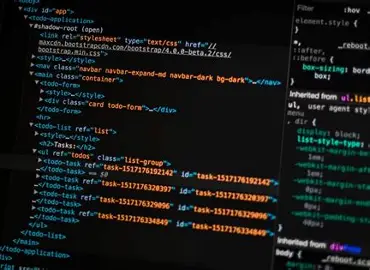

Frontend

Поняття Frontend охоплює все те, з чим безпосередньо взаємодіє користувач на екрані монітора чи смартфона. Це візуальна складова сайту, включаючи дизайн, шрифти, кольори, меню, кнопки та різноманітні анімації. Головне завдання клієнтської частини — забезпечити максимальну зручність, естетику та адаптивність інтерфейсу.
Основу будь-якої фронтенд-розробки складають три ключові технології, які працюють у тісній взаємодії усередині браузера. Перша з них — це мова розмітки HTML, яка створює каркас і структуру сторінки. Друга — каскадні таблиці стилів CSS, що відповідають за зовнішній вигляд, оформлення та кольорову гаму. Третя — мова програмування JavaScript, яка додає сайту інтерактивності та динаміки.
Сучасний фронтенд вимагає від розробника не лише знання синтаксису, а й розуміння принципів UX/UI дизайну. Важливо, щоб сайт однаково добре виглядаяв і на великому моніторі комп'ютера, і на маленькому екрані мобільного телефону, підлаштовуючись під будь-який пристрій.
Назад